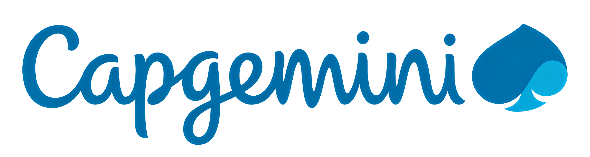

Ich bin Milorad Cika, Informatiker mit Schwerpunkt auf Künstlicher Intelligenz,
Datenanalyse, Cloud-Technologien und IT-Governance. Durch meine Erfahrungen bei
Capgemini, KPMG und in freiberuflichen Data-Analytics-Projekten verbinde ich technisches
Verständnis mit analytischem und strategischem Denken. Besonders interessieren mich die
Schnittstellen zwischen AI Strategy, Data Management, Governance und Business Transformation.
Auf dieser Website finden Sie einen kompakten Überblick über meinen Werdegang, meine Projekte
und meine fachlichen Schwerpunkte. Bei weiteren Fragen können Sie sich an meinen Chatbot wenden.

Capgemini
- Mitarbeit bei der Migration der bestehenden Systemlandschaft in die Microsoft Azure Cloud mit Fokus auf Containerisierung.
- Enge Zusammenarbeit mit dem Governance-Team zur Sicherstellung einer richtlinien- und policykonformen Cloud-Migration.
- Entwicklung und Automatisierung von Anwendungen und Prozessen mit Python.
- Entwicklungsschwerpunkt GenAI-Plattformarchitektur.
Freelancing
- Konsolidierung und Strukturierung von Betriebs-, Verkaufs- und Lieferantendaten aus unterschiedlichen Systemen.
- Erstellung datenbasierter Auswertungen zur Unterstützung operativer und strategischer Entscheidungen.
KPMG
- Strukturierung eines Leistungsangebots regulatorischer Security-Anforderungen inklusive inhaltlicher Ausarbeitung und adressatengerechter Aufbereitung.
- Analyse von SailPoint sowie Bewertung relevanter System-, Prozess- und Schnittstellenanforderungen für externe Kooperationspartner.
- Erstellung von Datenschutzschulungen sowie Konzeption und Entwicklung von Awareness-Maßnahmen auf Basis von ISO/IEC 27001, NIST und CSF.
- Dokumentation standardisierter Prüf- und Analyseprozesse zur Sicherstellung regulatorischer Anforderungen.
- Mitarbeit an der Ausarbeitung des NIS-2-Umsetzungsgesetzes.
SC Bau
- Abwicklung administrativer Aufgaben wie Rechnungsstellung, Schriftverkehr, Datenpflege.
- Ansprechpartner für Kunden sowie Sicherstellung der Qualitätsstandards.
Goethe-Universität, Frankfurt am Main
- Thesis: Design und Entwicklung einer KI-basierten Chatbot-App in Python zur Unterstützung und Förderung der mentalen Gesundheit.
- Schwerpunkt auf Wirtschaftsinformatik, Künstlicher Intelligenz und Big Data.
- UniSeminar: In Kooperation mit Campana & Schott eine Ladesäuleninfrastruktur mit innocept mobility für epsotech geplant und erfolgreich vorgestellt.
The University of Osaka (大阪大学), Osaka
- Absolvierung eines halbjährigen akademischen Austauschs im Rahmen des Kurzzeit-Studentenaustauschprogramms der Universität Osaka (OUSSEP).
- Erwerb internationaler Erfahrung und interkultureller akademischer Kenntnisse im Bereich Management.
Goethe-Universität, Frankfurt am Main
- Thesis: Konzeption und Entwicklung eines datengetriebenen Reporting-Dashboards in Python für politische Stakeholder im Bildungsbereich.
- Nebenfach: Volkswirtschaftslehre.
Microsoft
- Credential ID: 6A1D12F32C7BC97C · Certification number: 159E2B-OB5C40
Microsoft & Coursera
- Lead Enterprise Product Development with Copilot: Azure, Power BI, UX/UI Design, Product Lifecycle Management.
Microsoft & Coursera
- Business Analysis, Microsoft Visio, Excel, Power Platform, Requirements Gathering, Stakeholder Management.
Google & Coursera
- Spreadsheets, SQL, Tableau, R Programming, Datenaufbereitung, Visualisierung und Analyse.
Google & Coursera
- Projektplanung, -durchführung, Agile/Scrum, traditionelles und agiles Projektmanagement.
Praktische Erfahrungen
Python
Meine Hauptprogrammiersprache, mit der ich bisher verschiedenste Projekte im Bereich Analytics und KI umgesetzt habe.
Generative AI
Fundiertes Wissen zu KI, Machine Learning, Deep Learning und GenAI sowie Erfahrung mit KI-gestützten Tools, Prompting und Anwendungsmöglichkeiten generativer KI.
Projektmanagement
Erfahrung in agilen Projektumgebungen sowie Zusammenarbeit in iterativen Entwicklungsprozessen. Vertraut mit Scrum, Kanban und SAFe.
Governance
Während meiner Zeit als IT-Security Consultant bin ich viel mit regulatorischen Themen in Kontakt gewesen.
Cloud Computing
Grundlagen in Azure und GCP, Cloud-Migration, Containerisierung und cloudbasierte Anwendungen.
Data Analytics
Grundlagen in Datenanalyse, Datenaufbereitung und Interpretation datenbasierter Zusammenhänge.